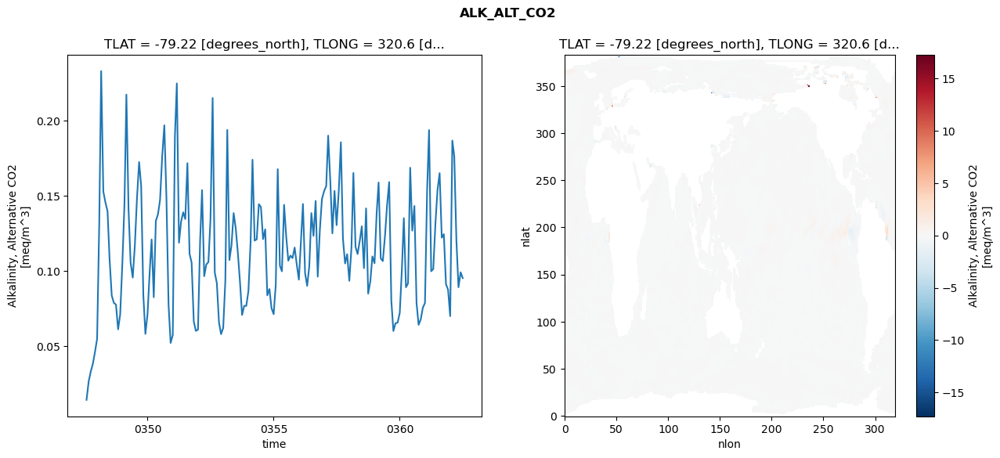
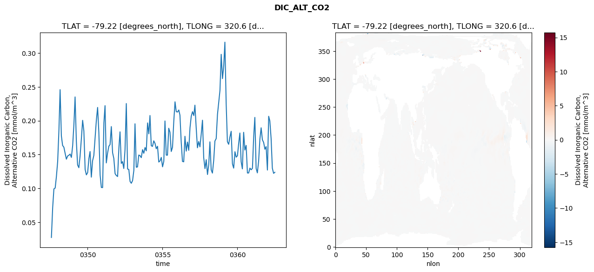
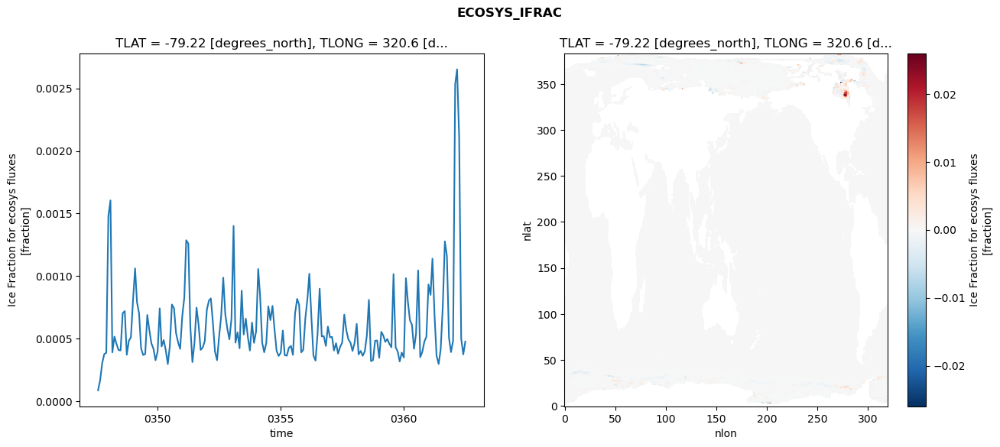
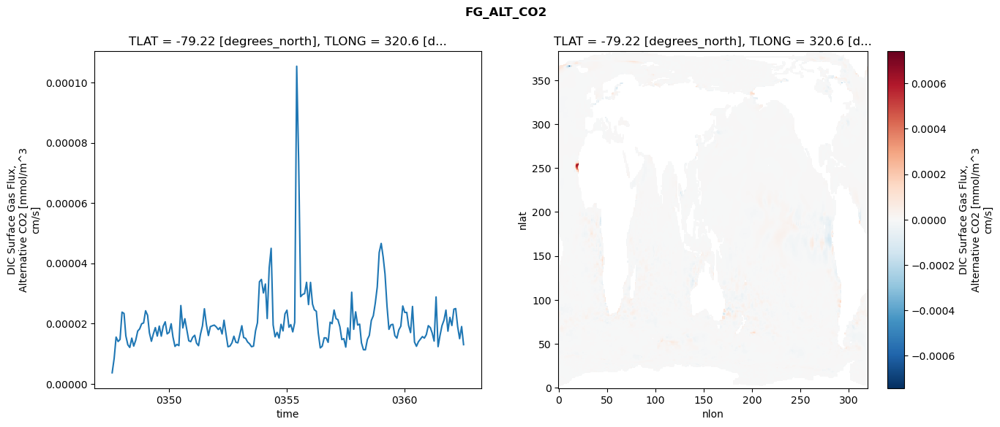

glb-dor_North_Atlantic_basin_010_1999-07-01_00042#
Simulation details#
Case: smyle.cdr-atlas-v0.glb-dor_North_Atlantic_basin_010_1999-07-01_00042.001
Basin: North_Atlantic_basin
Polygon: 10.0
Start date: 1999-07
Show code cell source Hide code cell source
import xarray as xr
import matplotlib.pyplot as plt
Show code cell source Hide code cell source
zarr_store = "/path/to/zarr/store"
# Parameters
zarr_store = "/global/cfs/projectdirs/m4746/Projects/Ocean-CDR-Atlas-v0/data/validation/smyle.cdr-atlas-v0.glb-dor_North_Atlantic_basin_010_1999-07-01_00042.001.validation.zarr"
Show code cell source Hide code cell source
%%time
ds_o = xr.open_zarr(zarr_store).compute()
ds_o
CPU times: user 692 ms, sys: 461 ms, total: 1.15 s
Wall time: 1.36 s
<xarray.Dataset> Size: 2MB
Dimensions: (nlat: 384, nlon: 320, time: 180)
Coordinates:
TLAT float64 8B -79.22
TLONG float64 8B 320.6
ULAT float64 8B -78.95
ULONG float64 8B 321.1
* time (time) object 1kB 0347-08-01 00:00:00 ... 0362-07-01 0...
z_t float32 4B 500.0
Dimensions without coordinates: nlat, nlon
Data variables:
ALK_ALT_CO2_diff (nlat, nlon) float32 492kB nan nan nan ... nan nan nan
ALK_ALT_CO2_rmse (time) float64 1kB 0.01452 0.02668 ... 0.09921 0.09534
DIC_ALT_CO2_diff (nlat, nlon) float32 492kB nan nan nan ... nan nan nan
DIC_ALT_CO2_rmse (time) float64 1kB 0.0276 0.07175 ... 0.1223 0.1238
ECOSYS_IFRAC_diff (nlat, nlon) float32 492kB nan nan nan ... nan nan nan
ECOSYS_IFRAC_rmse (time) float64 1kB 8.875e-05 0.0001683 ... 0.0004775
FG_ALT_CO2_diff (nlat, nlon) float32 492kB nan nan nan ... nan nan nan
FG_ALT_CO2_rmse (time) float64 1kB 3.665e-06 8.445e-06 ... 1.3e-05xarray.Dataset
- nlat: 384
- nlon: 320
- time: 180
- TLAT()float64-79.22
- long_name :
- array of t-grid latitudes
- units :
- degrees_north
array(-79.22052261)
- TLONG()float64320.6
- long_name :
- array of t-grid longitudes
- units :
- degrees_east
array(320.56250892)
- ULAT()float64-78.95
- long_name :
- array of u-grid latitudes
- units :
- degrees_north
array(-78.95289509)
- ULONG()float64321.1
- long_name :
- array of u-grid longitudes
- units :
- degrees_east
array(321.12500894)
- time(time)object0347-08-01 00:00:00 ... 0362-07-...
- bounds :
- time_bound
- long_name :
- time
array([cftime.DatetimeNoLeap(347, 8, 1, 0, 0, 0, 0, has_year_zero=True), cftime.DatetimeNoLeap(347, 9, 1, 0, 0, 0, 0, has_year_zero=True), cftime.DatetimeNoLeap(347, 10, 1, 0, 0, 0, 0, has_year_zero=True), cftime.DatetimeNoLeap(347, 11, 1, 0, 0, 0, 0, has_year_zero=True), cftime.DatetimeNoLeap(347, 12, 1, 0, 0, 0, 0, has_year_zero=True), cftime.DatetimeNoLeap(348, 1, 1, 0, 0, 0, 0, has_year_zero=True), cftime.DatetimeNoLeap(348, 2, 1, 0, 0, 0, 0, has_year_zero=True), cftime.DatetimeNoLeap(348, 3, 1, 0, 0, 0, 0, has_year_zero=True), cftime.DatetimeNoLeap(348, 4, 1, 0, 0, 0, 0, has_year_zero=True), cftime.DatetimeNoLeap(348, 5, 1, 0, 0, 0, 0, has_year_zero=True), cftime.DatetimeNoLeap(348, 6, 1, 0, 0, 0, 0, has_year_zero=True), cftime.DatetimeNoLeap(348, 7, 1, 0, 0, 0, 0, has_year_zero=True), cftime.DatetimeNoLeap(348, 8, 1, 0, 0, 0, 0, has_year_zero=True), cftime.DatetimeNoLeap(348, 9, 1, 0, 0, 0, 0, has_year_zero=True), cftime.DatetimeNoLeap(348, 10, 1, 0, 0, 0, 0, has_year_zero=True), cftime.DatetimeNoLeap(348, 11, 1, 0, 0, 0, 0, has_year_zero=True), cftime.DatetimeNoLeap(348, 12, 1, 0, 0, 0, 0, has_year_zero=True), cftime.DatetimeNoLeap(349, 1, 1, 0, 0, 0, 0, has_year_zero=True), cftime.DatetimeNoLeap(349, 2, 1, 0, 0, 0, 0, has_year_zero=True), cftime.DatetimeNoLeap(349, 3, 1, 0, 0, 0, 0, has_year_zero=True), cftime.DatetimeNoLeap(349, 4, 1, 0, 0, 0, 0, has_year_zero=True), cftime.DatetimeNoLeap(349, 5, 1, 0, 0, 0, 0, has_year_zero=True), cftime.DatetimeNoLeap(349, 6, 1, 0, 0, 0, 0, has_year_zero=True), cftime.DatetimeNoLeap(349, 7, 1, 0, 0, 0, 0, has_year_zero=True), cftime.DatetimeNoLeap(349, 8, 1, 0, 0, 0, 0, has_year_zero=True), cftime.DatetimeNoLeap(349, 9, 1, 0, 0, 0, 0, has_year_zero=True), cftime.DatetimeNoLeap(349, 10, 1, 0, 0, 0, 0, has_year_zero=True), cftime.DatetimeNoLeap(349, 11, 1, 0, 0, 0, 0, has_year_zero=True), cftime.DatetimeNoLeap(349, 12, 1, 0, 0, 0, 0, has_year_zero=True), cftime.DatetimeNoLeap(350, 1, 1, 0, 0, 0, 0, has_year_zero=True), cftime.DatetimeNoLeap(350, 2, 1, 0, 0, 0, 0, has_year_zero=True), cftime.DatetimeNoLeap(350, 3, 1, 0, 0, 0, 0, has_year_zero=True), cftime.DatetimeNoLeap(350, 4, 1, 0, 0, 0, 0, has_year_zero=True), cftime.DatetimeNoLeap(350, 5, 1, 0, 0, 0, 0, has_year_zero=True), cftime.DatetimeNoLeap(350, 6, 1, 0, 0, 0, 0, has_year_zero=True), cftime.DatetimeNoLeap(350, 7, 1, 0, 0, 0, 0, has_year_zero=True), cftime.DatetimeNoLeap(350, 8, 1, 0, 0, 0, 0, has_year_zero=True), cftime.DatetimeNoLeap(350, 9, 1, 0, 0, 0, 0, has_year_zero=True), cftime.DatetimeNoLeap(350, 10, 1, 0, 0, 0, 0, has_year_zero=True), cftime.DatetimeNoLeap(350, 11, 1, 0, 0, 0, 0, has_year_zero=True), cftime.DatetimeNoLeap(350, 12, 1, 0, 0, 0, 0, has_year_zero=True), cftime.DatetimeNoLeap(351, 1, 1, 0, 0, 0, 0, has_year_zero=True), cftime.DatetimeNoLeap(351, 2, 1, 0, 0, 0, 0, has_year_zero=True), cftime.DatetimeNoLeap(351, 3, 1, 0, 0, 0, 0, has_year_zero=True), cftime.DatetimeNoLeap(351, 4, 1, 0, 0, 0, 0, has_year_zero=True), cftime.DatetimeNoLeap(351, 5, 1, 0, 0, 0, 0, has_year_zero=True), cftime.DatetimeNoLeap(351, 6, 1, 0, 0, 0, 0, has_year_zero=True), cftime.DatetimeNoLeap(351, 7, 1, 0, 0, 0, 0, has_year_zero=True), cftime.DatetimeNoLeap(351, 8, 1, 0, 0, 0, 0, has_year_zero=True), cftime.DatetimeNoLeap(351, 9, 1, 0, 0, 0, 0, has_year_zero=True), cftime.DatetimeNoLeap(351, 10, 1, 0, 0, 0, 0, has_year_zero=True), cftime.DatetimeNoLeap(351, 11, 1, 0, 0, 0, 0, has_year_zero=True), cftime.DatetimeNoLeap(351, 12, 1, 0, 0, 0, 0, has_year_zero=True), cftime.DatetimeNoLeap(352, 1, 1, 0, 0, 0, 0, has_year_zero=True), cftime.DatetimeNoLeap(352, 2, 1, 0, 0, 0, 0, has_year_zero=True), cftime.DatetimeNoLeap(352, 3, 1, 0, 0, 0, 0, has_year_zero=True), cftime.DatetimeNoLeap(352, 4, 1, 0, 0, 0, 0, has_year_zero=True), cftime.DatetimeNoLeap(352, 5, 1, 0, 0, 0, 0, has_year_zero=True), cftime.DatetimeNoLeap(352, 6, 1, 0, 0, 0, 0, has_year_zero=True), cftime.DatetimeNoLeap(352, 7, 1, 0, 0, 0, 0, has_year_zero=True), cftime.DatetimeNoLeap(352, 8, 1, 0, 0, 0, 0, has_year_zero=True), cftime.DatetimeNoLeap(352, 9, 1, 0, 0, 0, 0, has_year_zero=True), cftime.DatetimeNoLeap(352, 10, 1, 0, 0, 0, 0, has_year_zero=True), cftime.DatetimeNoLeap(352, 11, 1, 0, 0, 0, 0, has_year_zero=True), cftime.DatetimeNoLeap(352, 12, 1, 0, 0, 0, 0, has_year_zero=True), cftime.DatetimeNoLeap(353, 1, 1, 0, 0, 0, 0, has_year_zero=True), cftime.DatetimeNoLeap(353, 2, 1, 0, 0, 0, 0, has_year_zero=True), cftime.DatetimeNoLeap(353, 3, 1, 0, 0, 0, 0, has_year_zero=True), cftime.DatetimeNoLeap(353, 4, 1, 0, 0, 0, 0, has_year_zero=True), cftime.DatetimeNoLeap(353, 5, 1, 0, 0, 0, 0, has_year_zero=True), cftime.DatetimeNoLeap(353, 6, 1, 0, 0, 0, 0, has_year_zero=True), cftime.DatetimeNoLeap(353, 7, 1, 0, 0, 0, 0, has_year_zero=True), cftime.DatetimeNoLeap(353, 8, 1, 0, 0, 0, 0, has_year_zero=True), cftime.DatetimeNoLeap(353, 9, 1, 0, 0, 0, 0, has_year_zero=True), cftime.DatetimeNoLeap(353, 10, 1, 0, 0, 0, 0, has_year_zero=True), cftime.DatetimeNoLeap(353, 11, 1, 0, 0, 0, 0, has_year_zero=True), cftime.DatetimeNoLeap(353, 12, 1, 0, 0, 0, 0, has_year_zero=True), cftime.DatetimeNoLeap(354, 1, 1, 0, 0, 0, 0, has_year_zero=True), cftime.DatetimeNoLeap(354, 2, 1, 0, 0, 0, 0, has_year_zero=True), cftime.DatetimeNoLeap(354, 3, 1, 0, 0, 0, 0, has_year_zero=True), cftime.DatetimeNoLeap(354, 4, 1, 0, 0, 0, 0, has_year_zero=True), cftime.DatetimeNoLeap(354, 5, 1, 0, 0, 0, 0, has_year_zero=True), cftime.DatetimeNoLeap(354, 6, 1, 0, 0, 0, 0, has_year_zero=True), cftime.DatetimeNoLeap(354, 7, 1, 0, 0, 0, 0, has_year_zero=True), cftime.DatetimeNoLeap(354, 8, 1, 0, 0, 0, 0, has_year_zero=True), cftime.DatetimeNoLeap(354, 9, 1, 0, 0, 0, 0, has_year_zero=True), cftime.DatetimeNoLeap(354, 10, 1, 0, 0, 0, 0, has_year_zero=True), cftime.DatetimeNoLeap(354, 11, 1, 0, 0, 0, 0, has_year_zero=True), cftime.DatetimeNoLeap(354, 12, 1, 0, 0, 0, 0, has_year_zero=True), cftime.DatetimeNoLeap(355, 1, 1, 0, 0, 0, 0, has_year_zero=True), cftime.DatetimeNoLeap(355, 2, 1, 0, 0, 0, 0, has_year_zero=True), cftime.DatetimeNoLeap(355, 3, 1, 0, 0, 0, 0, has_year_zero=True), cftime.DatetimeNoLeap(355, 4, 1, 0, 0, 0, 0, has_year_zero=True), cftime.DatetimeNoLeap(355, 5, 1, 0, 0, 0, 0, has_year_zero=True), cftime.DatetimeNoLeap(355, 6, 1, 0, 0, 0, 0, has_year_zero=True), cftime.DatetimeNoLeap(355, 7, 1, 0, 0, 0, 0, has_year_zero=True), cftime.DatetimeNoLeap(355, 8, 1, 0, 0, 0, 0, has_year_zero=True), cftime.DatetimeNoLeap(355, 9, 1, 0, 0, 0, 0, has_year_zero=True), cftime.DatetimeNoLeap(355, 10, 1, 0, 0, 0, 0, has_year_zero=True), cftime.DatetimeNoLeap(355, 11, 1, 0, 0, 0, 0, has_year_zero=True), cftime.DatetimeNoLeap(355, 12, 1, 0, 0, 0, 0, has_year_zero=True), cftime.DatetimeNoLeap(356, 1, 1, 0, 0, 0, 0, has_year_zero=True), cftime.DatetimeNoLeap(356, 2, 1, 0, 0, 0, 0, has_year_zero=True), cftime.DatetimeNoLeap(356, 3, 1, 0, 0, 0, 0, has_year_zero=True), cftime.DatetimeNoLeap(356, 4, 1, 0, 0, 0, 0, has_year_zero=True), cftime.DatetimeNoLeap(356, 5, 1, 0, 0, 0, 0, has_year_zero=True), cftime.DatetimeNoLeap(356, 6, 1, 0, 0, 0, 0, has_year_zero=True), cftime.DatetimeNoLeap(356, 7, 1, 0, 0, 0, 0, has_year_zero=True), cftime.DatetimeNoLeap(356, 8, 1, 0, 0, 0, 0, has_year_zero=True), cftime.DatetimeNoLeap(356, 9, 1, 0, 0, 0, 0, has_year_zero=True), cftime.DatetimeNoLeap(356, 10, 1, 0, 0, 0, 0, has_year_zero=True), cftime.DatetimeNoLeap(356, 11, 1, 0, 0, 0, 0, has_year_zero=True), cftime.DatetimeNoLeap(356, 12, 1, 0, 0, 0, 0, has_year_zero=True), cftime.DatetimeNoLeap(357, 1, 1, 0, 0, 0, 0, has_year_zero=True), cftime.DatetimeNoLeap(357, 2, 1, 0, 0, 0, 0, has_year_zero=True), cftime.DatetimeNoLeap(357, 3, 1, 0, 0, 0, 0, has_year_zero=True), cftime.DatetimeNoLeap(357, 4, 1, 0, 0, 0, 0, has_year_zero=True), cftime.DatetimeNoLeap(357, 5, 1, 0, 0, 0, 0, has_year_zero=True), cftime.DatetimeNoLeap(357, 6, 1, 0, 0, 0, 0, has_year_zero=True), cftime.DatetimeNoLeap(357, 7, 1, 0, 0, 0, 0, has_year_zero=True), cftime.DatetimeNoLeap(357, 8, 1, 0, 0, 0, 0, has_year_zero=True), cftime.DatetimeNoLeap(357, 9, 1, 0, 0, 0, 0, has_year_zero=True), cftime.DatetimeNoLeap(357, 10, 1, 0, 0, 0, 0, has_year_zero=True), cftime.DatetimeNoLeap(357, 11, 1, 0, 0, 0, 0, has_year_zero=True), cftime.DatetimeNoLeap(357, 12, 1, 0, 0, 0, 0, has_year_zero=True), cftime.DatetimeNoLeap(358, 1, 1, 0, 0, 0, 0, has_year_zero=True), cftime.DatetimeNoLeap(358, 2, 1, 0, 0, 0, 0, has_year_zero=True), cftime.DatetimeNoLeap(358, 3, 1, 0, 0, 0, 0, has_year_zero=True), cftime.DatetimeNoLeap(358, 4, 1, 0, 0, 0, 0, has_year_zero=True), cftime.DatetimeNoLeap(358, 5, 1, 0, 0, 0, 0, has_year_zero=True), cftime.DatetimeNoLeap(358, 6, 1, 0, 0, 0, 0, has_year_zero=True), cftime.DatetimeNoLeap(358, 7, 1, 0, 0, 0, 0, has_year_zero=True), cftime.DatetimeNoLeap(358, 8, 1, 0, 0, 0, 0, has_year_zero=True), cftime.DatetimeNoLeap(358, 9, 1, 0, 0, 0, 0, has_year_zero=True), cftime.DatetimeNoLeap(358, 10, 1, 0, 0, 0, 0, has_year_zero=True), cftime.DatetimeNoLeap(358, 11, 1, 0, 0, 0, 0, has_year_zero=True), cftime.DatetimeNoLeap(358, 12, 1, 0, 0, 0, 0, has_year_zero=True), cftime.DatetimeNoLeap(359, 1, 1, 0, 0, 0, 0, has_year_zero=True), cftime.DatetimeNoLeap(359, 2, 1, 0, 0, 0, 0, has_year_zero=True), cftime.DatetimeNoLeap(359, 3, 1, 0, 0, 0, 0, has_year_zero=True), cftime.DatetimeNoLeap(359, 4, 1, 0, 0, 0, 0, has_year_zero=True), cftime.DatetimeNoLeap(359, 5, 1, 0, 0, 0, 0, has_year_zero=True), cftime.DatetimeNoLeap(359, 6, 1, 0, 0, 0, 0, has_year_zero=True), cftime.DatetimeNoLeap(359, 7, 1, 0, 0, 0, 0, has_year_zero=True), cftime.DatetimeNoLeap(359, 8, 1, 0, 0, 0, 0, has_year_zero=True), cftime.DatetimeNoLeap(359, 9, 1, 0, 0, 0, 0, has_year_zero=True), cftime.DatetimeNoLeap(359, 10, 1, 0, 0, 0, 0, has_year_zero=True), cftime.DatetimeNoLeap(359, 11, 1, 0, 0, 0, 0, has_year_zero=True), cftime.DatetimeNoLeap(359, 12, 1, 0, 0, 0, 0, has_year_zero=True), cftime.DatetimeNoLeap(360, 1, 1, 0, 0, 0, 0, has_year_zero=True), cftime.DatetimeNoLeap(360, 2, 1, 0, 0, 0, 0, has_year_zero=True), cftime.DatetimeNoLeap(360, 3, 1, 0, 0, 0, 0, has_year_zero=True), cftime.DatetimeNoLeap(360, 4, 1, 0, 0, 0, 0, has_year_zero=True), cftime.DatetimeNoLeap(360, 5, 1, 0, 0, 0, 0, has_year_zero=True), cftime.DatetimeNoLeap(360, 6, 1, 0, 0, 0, 0, has_year_zero=True), cftime.DatetimeNoLeap(360, 7, 1, 0, 0, 0, 0, has_year_zero=True), cftime.DatetimeNoLeap(360, 8, 1, 0, 0, 0, 0, has_year_zero=True), cftime.DatetimeNoLeap(360, 9, 1, 0, 0, 0, 0, has_year_zero=True), cftime.DatetimeNoLeap(360, 10, 1, 0, 0, 0, 0, has_year_zero=True), cftime.DatetimeNoLeap(360, 11, 1, 0, 0, 0, 0, has_year_zero=True), cftime.DatetimeNoLeap(360, 12, 1, 0, 0, 0, 0, has_year_zero=True), cftime.DatetimeNoLeap(361, 1, 1, 0, 0, 0, 0, has_year_zero=True), cftime.DatetimeNoLeap(361, 2, 1, 0, 0, 0, 0, has_year_zero=True), cftime.DatetimeNoLeap(361, 3, 1, 0, 0, 0, 0, has_year_zero=True), cftime.DatetimeNoLeap(361, 4, 1, 0, 0, 0, 0, has_year_zero=True), cftime.DatetimeNoLeap(361, 5, 1, 0, 0, 0, 0, has_year_zero=True), cftime.DatetimeNoLeap(361, 6, 1, 0, 0, 0, 0, has_year_zero=True), cftime.DatetimeNoLeap(361, 7, 1, 0, 0, 0, 0, has_year_zero=True), cftime.DatetimeNoLeap(361, 8, 1, 0, 0, 0, 0, has_year_zero=True), cftime.DatetimeNoLeap(361, 9, 1, 0, 0, 0, 0, has_year_zero=True), cftime.DatetimeNoLeap(361, 10, 1, 0, 0, 0, 0, has_year_zero=True), cftime.DatetimeNoLeap(361, 11, 1, 0, 0, 0, 0, has_year_zero=True), cftime.DatetimeNoLeap(361, 12, 1, 0, 0, 0, 0, has_year_zero=True), cftime.DatetimeNoLeap(362, 1, 1, 0, 0, 0, 0, has_year_zero=True), cftime.DatetimeNoLeap(362, 2, 1, 0, 0, 0, 0, has_year_zero=True), cftime.DatetimeNoLeap(362, 3, 1, 0, 0, 0, 0, has_year_zero=True), cftime.DatetimeNoLeap(362, 4, 1, 0, 0, 0, 0, has_year_zero=True), cftime.DatetimeNoLeap(362, 5, 1, 0, 0, 0, 0, has_year_zero=True), cftime.DatetimeNoLeap(362, 6, 1, 0, 0, 0, 0, has_year_zero=True), cftime.DatetimeNoLeap(362, 7, 1, 0, 0, 0, 0, has_year_zero=True)], dtype=object) - z_t()float32500.0
- long_name :
- depth from surface to midpoint of layer
- positive :
- down
- units :
- centimeters
- valid_max :
- 537500.0
- valid_min :
- 500.0
array(500., dtype=float32)
- ALK_ALT_CO2_diff(nlat, nlon)float32nan nan nan nan ... nan nan nan nan
- cell_methods :
- time: mean
- grid_loc :
- 3111
- long_name :
- Alkalinity, Alternative CO2
- units :
- meq/m^3
array([[ nan, nan, nan, ..., nan, nan, nan], [ nan, nan, nan, ..., nan, nan, nan], [0.01538086, 0.00634766, 0.01635742, ..., nan, nan, nan], ..., [ nan, nan, nan, ..., nan, nan, nan], [ nan, nan, nan, ..., nan, nan, nan], [ nan, nan, nan, ..., nan, nan, nan]], dtype=float32) - ALK_ALT_CO2_rmse(time)float640.01452 0.02668 ... 0.09921 0.09534
- cell_methods :
- time: mean
- grid_loc :
- 3111
- long_name :
- Alkalinity, Alternative CO2
- units :
- meq/m^3
array([0.01452321, 0.02668125, 0.03330265, 0.03847946, 0.04624556, 0.05496302, 0.13148609, 0.23276015, 0.15278895, 0.14561976, 0.13974528, 0.10753205, 0.08368705, 0.0788531 , 0.07778401, 0.06135176, 0.07119942, 0.10445937, 0.1445782 , 0.21711046, 0.14072921, 0.10559523, 0.09567752, 0.11679472, 0.14824701, 0.17236412, 0.15629481, 0.08393641, 0.0582919 , 0.07148468, 0.0993945 , 0.12097276, 0.082645 , 0.13323455, 0.13770834, 0.14716244, 0.17606571, 0.19676113, 0.1493638 , 0.07774857, 0.05231209, 0.0574996 , 0.18949267, 0.224547 , 0.11880558, 0.13272132, 0.13899786, 0.13454714, 0.17160272, 0.1114926 , 0.10554857, 0.06660365, 0.06030041, 0.06114217, 0.1204687 , 0.153694 , 0.09661389, 0.1043105 , 0.10602057, 0.13444336, 0.21486258, 0.09901985, 0.09188892, 0.06584791, 0.05812966, 0.06226299, 0.09374388, 0.19366601, 0.1072789 , 0.11715171, 0.13847076, 0.12852707, 0.11207105, 0.09269785, 0.07085896, 0.07691968, 0.0768746 , 0.08684526, 0.11865487, 0.1738843 , 0.12021667, 0.12105078, 0.14439493, 0.14245742, 0.12121773, 0.12767706, 0.0838613 , 0.08809828, 0.07536551, 0.07138885, 0.09111011, 0.16761994, 0.10355226, 0.09982419, 0.14396418, 0.123453 , 0.10687489, 0.11026155, 0.10860271, 0.11560462, 0.10452997, 0.09429816, 0.1209254 , 0.14450694, 0.09864977, 0.09017953, 0.10338378, 0.13847964, 0.12335864, 0.14657867, 0.09631961, 0.12750582, 0.14783577, 0.15300325, 0.15643652, 0.18988488, 0.15968352, 0.12503674, 0.15318035, 0.13046056, 0.15275469, 0.18548712, 0.1213958 , 0.10504984, 0.11119001, 0.0935436 , 0.11540211, 0.16511191, 0.11601182, 0.11132323, 0.1199906 , 0.12969813, 0.10194731, 0.1415814 , 0.08503552, 0.09307847, 0.10971676, 0.10517529, 0.13869589, 0.15879867, 0.10837032, 0.10663515, 0.1231161 , 0.14346623, 0.15905167, 0.08041522, 0.06022063, 0.0653985 , 0.06577712, 0.0721888 , 0.10119722, 0.13513895, 0.08925115, 0.09184323, 0.16858296, 0.12683387, 0.14317583, 0.0787585 , 0.06433075, 0.06795074, 0.07565429, 0.07880742, 0.15353851, 0.19357773, 0.09987478, 0.10133779, 0.13136614, 0.15363778, 0.1649982 , 0.12217332, 0.12449369, 0.09131492, 0.08765701, 0.07008619, 0.18663874, 0.17606254, 0.12010717, 0.08924655, 0.09920722, 0.09533614]) - DIC_ALT_CO2_diff(nlat, nlon)float32nan nan nan nan ... nan nan nan nan
- cell_methods :
- time: mean
- grid_loc :
- 3111
- long_name :
- Dissolved Inorganic Carbon, Alternative CO2
- units :
- mmol/m^3
array([[ nan, nan, nan, ..., nan, nan, nan], [ nan, nan, nan, ..., nan, nan, nan], [0.00976562, 0. , 0.00415039, ..., nan, nan, nan], ..., [ nan, nan, nan, ..., nan, nan, nan], [ nan, nan, nan, ..., nan, nan, nan], [ nan, nan, nan, ..., nan, nan, nan]], dtype=float32) - DIC_ALT_CO2_rmse(time)float640.0276 0.07175 ... 0.1223 0.1238
- cell_methods :
- time: mean
- grid_loc :
- 3111
- long_name :
- Dissolved Inorganic Carbon, Alternative CO2
- units :
- mmol/m^3
array([0.02760311, 0.0717546 , 0.09934598, 0.10058072, 0.11758033, 0.13991781, 0.18714923, 0.24587356, 0.17767944, 0.16345928, 0.16092675, 0.15201694, 0.14323065, 0.14790176, 0.14907243, 0.15072699, 0.14582028, 0.16311516, 0.19511802, 0.23513962, 0.16960773, 0.13478569, 0.13061319, 0.148013 , 0.17325056, 0.20060294, 0.18497605, 0.12807903, 0.12007877, 0.12334148, 0.14431487, 0.15450571, 0.11669769, 0.14075112, 0.14874889, 0.17409447, 0.20045021, 0.2196143 , 0.18269751, 0.11986021, 0.10140643, 0.10129402, 0.19691163, 0.22228452, 0.13771661, 0.15199943, 0.16229426, 0.16479329, 0.19136393, 0.15265444, 0.14432378, 0.12182258, 0.11912678, 0.11761115, 0.15957012, 0.18360484, 0.13693753, 0.13961719, 0.12944534, 0.15750603, 0.22537476, 0.1287046 , 0.12805226, 0.1102182 , 0.10766732, 0.1116445 , 0.12673404, 0.19547621, 0.1313424 , 0.13177636, 0.14932633, 0.14844809, 0.14548197, 0.15727022, 0.15191056, 0.16047303, 0.15553253, 0.19674864, 0.18060941, 0.20771458, 0.16309928, 0.16209295, 0.17029559, 0.16665722, 0.15866003, 0.1622526 , 0.13901931, 0.14065372, 0.14582925, 0.13193026, 0.14026219, 0.19963588, 0.14921824, 0.14915177, 0.18891595, 0.18296456, 0.15455689, 0.16085336, 0.19841171, 0.22791693, 0.21334164, 0.21287936, 0.21584893, 0.20820648, 0.16844648, 0.13991847, 0.13933245, 0.17706104, 0.15510397, 0.16851754, 0.15627985, 0.18969101, 0.20655767, 0.21339439, 0.20762377, 0.22297483, 0.18939539, 0.16004885, 0.16929818, 0.16148611, 0.1799876 , 0.20077931, 0.14550955, 0.12925218, 0.14250901, 0.12061549, 0.13531572, 0.1687947 , 0.12752825, 0.12265099, 0.14098636, 0.17003787, 0.17359119, 0.20910408, 0.22646866, 0.24488698, 0.29805926, 0.26221944, 0.28119852, 0.31600479, 0.22551605, 0.16898269, 0.16519757, 0.17588781, 0.18439196, 0.13626965, 0.12999603, 0.15423578, 0.14622194, 0.14832226, 0.16721743, 0.18187534, 0.13941352, 0.12891039, 0.18290146, 0.15674042, 0.16357344, 0.12284357, 0.12280524, 0.13001363, 0.1276051 , 0.12966822, 0.17718842, 0.2049063 , 0.12960246, 0.12299195, 0.14042187, 0.17246162, 0.18955677, 0.17174235, 0.16799157, 0.15790315, 0.16180671, 0.12716696, 0.20656365, 0.19978624, 0.17379011, 0.12988873, 0.12230128, 0.12383884]) - ECOSYS_IFRAC_diff(nlat, nlon)float32nan nan nan nan ... nan nan nan nan
- cell_methods :
- time: mean
- grid_loc :
- 2110
- long_name :
- Ice Fraction for ecosys fluxes
- units :
- fraction
array([[ nan, nan, nan, ..., nan, nan, nan], [ nan, nan, nan, ..., nan, nan, nan], [6.5565109e-07, 4.3511391e-05, 2.2232533e-05, ..., nan, nan, nan], ..., [ nan, nan, nan, ..., nan, nan, nan], [ nan, nan, nan, ..., nan, nan, nan], [ nan, nan, nan, ..., nan, nan, nan]], dtype=float32) - ECOSYS_IFRAC_rmse(time)float648.875e-05 0.0001683 ... 0.0004775
- cell_methods :
- time: mean
- grid_loc :
- 2110
- long_name :
- Ice Fraction for ecosys fluxes
- units :
- fraction
array([8.87492644e-05, 1.68263010e-04, 3.04057346e-04, 3.77119626e-04, 3.88127502e-04, 1.48033928e-03, 1.60497754e-03, 3.91401463e-04, 5.17321075e-04, 4.59711714e-04, 4.09836665e-04, 4.06224019e-04, 7.03237579e-04, 7.20838760e-04, 3.72183640e-04, 4.84687280e-04, 5.11086522e-04, 8.04472971e-04, 1.06180599e-03, 7.93632551e-04, 7.02935811e-04, 4.23938616e-04, 3.69894655e-04, 3.78186144e-04, 6.90286858e-04, 5.66210903e-04, 4.63289342e-04, 4.18772094e-04, 3.28094760e-04, 3.96193739e-04, 7.42971071e-04, 4.38656901e-04, 4.89090399e-04, 4.10836636e-04, 2.97953058e-04, 4.41328576e-04, 7.73344869e-04, 7.44179384e-04, 5.45988457e-04, 4.70661026e-04, 4.18881659e-04, 6.76968301e-04, 8.31050101e-04, 1.28701733e-03, 1.26000743e-03, 5.98358221e-04, 3.13351148e-04, 4.65710119e-04, 7.48436463e-04, 6.09111608e-04, 4.11011991e-04, 4.30858150e-04, 4.81264845e-04, 7.32404595e-04, 8.05307023e-04, 8.22259357e-04, 6.25629064e-04, 3.98841054e-04, 3.28815641e-04, 5.14856971e-04, 6.81342471e-04, 9.87619423e-04, 6.96281688e-04, 5.78687436e-04, 4.95868615e-04, 6.61406496e-04, 1.40069301e-03, 4.69035531e-04, 5.51251312e-04, 4.23742859e-04, 8.83592538e-04, 5.34049368e-04, 6.60571430e-04, 5.12956109e-04, 4.06235702e-04, 6.28833749e-04, 4.67399909e-04, 5.58935725e-04, 1.05672623e-03, 8.44913313e-04, ... 4.11065818e-04, 6.64137599e-04, 8.20299204e-04, 1.01932322e-03, 6.68010233e-04, 3.66131354e-04, 3.24956205e-04, 5.40094856e-04, 9.00116961e-04, 5.18722510e-04, 5.20987642e-04, 4.42399350e-04, 5.97050391e-04, 5.11818003e-04, 5.14689370e-04, 4.06306525e-04, 4.64462011e-04, 3.81126464e-04, 4.35472203e-04, 4.68380570e-04, 6.92819124e-04, 5.65736767e-04, 4.94791322e-04, 4.68446591e-04, 4.02533935e-04, 4.67681498e-04, 6.18546880e-04, 3.74867161e-04, 4.02849191e-04, 3.63769680e-04, 3.98753275e-04, 5.23122030e-04, 8.10349693e-04, 3.21251525e-04, 3.29949704e-04, 4.84401269e-04, 4.85897153e-04, 3.47894900e-04, 5.55218047e-04, 5.27577934e-04, 4.75212513e-04, 4.97783266e-04, 4.58150780e-04, 4.32114156e-04, 1.01623898e-03, 4.32268325e-04, 3.98918589e-04, 3.18381030e-04, 3.89653514e-04, 3.49730794e-04, 9.83582385e-04, 8.00331062e-04, 6.48481457e-04, 6.12176186e-04, 4.20092966e-04, 5.40601935e-04, 1.04581260e-03, 3.52942083e-04, 3.94140041e-04, 4.76739245e-04, 5.15519056e-04, 9.33269042e-04, 8.50725174e-04, 1.13951520e-03, 6.87547885e-04, 3.64161248e-04, 2.98261607e-04, 4.15371061e-04, 7.56570035e-04, 1.27732516e-03, 1.16205525e-03, 5.08680382e-04, 3.93674780e-04, 4.86372403e-04, 2.53348432e-03, 2.65174179e-03, 2.10696896e-03, 5.01446026e-04, 3.74882795e-04, 4.77507981e-04]) - FG_ALT_CO2_diff(nlat, nlon)float32nan nan nan nan ... nan nan nan nan
- cell_methods :
- time: mean
- grid_loc :
- 2110
- long_name :
- DIC Surface Gas Flux, Alternative CO2
- units :
- mmol/m^3 cm/s
array([[ nan, nan, nan, ..., nan, nan, nan], [ nan, nan, nan, ..., nan, nan, nan], [3.6844199e-09, 1.7896582e-09, 1.4470217e-08, ..., nan, nan, nan], ..., [ nan, nan, nan, ..., nan, nan, nan], [ nan, nan, nan, ..., nan, nan, nan], [ nan, nan, nan, ..., nan, nan, nan]], dtype=float32) - FG_ALT_CO2_rmse(time)float643.665e-06 8.445e-06 ... 1.3e-05
- cell_methods :
- time: mean
- grid_loc :
- 2110
- long_name :
- DIC Surface Gas Flux, Alternative CO2
- units :
- mmol/m^3 cm/s
array([3.66511477e-06, 8.44490662e-06, 1.55113068e-05, 1.40431388e-05, 1.47216107e-05, 2.37826487e-05, 2.33566510e-05, 1.59201222e-05, 1.29559737e-05, 1.20770132e-05, 1.51653973e-05, 1.25165511e-05, 1.44624275e-05, 1.75208674e-05, 1.82361619e-05, 1.99364619e-05, 2.02046203e-05, 2.42521091e-05, 2.27346873e-05, 1.69498714e-05, 1.41153832e-05, 1.65469831e-05, 1.86582104e-05, 1.58427491e-05, 1.91643820e-05, 1.58124846e-05, 1.91215045e-05, 2.05752255e-05, 1.65770565e-05, 1.70922411e-05, 1.99307261e-05, 1.55507737e-05, 1.24239542e-05, 1.30889452e-05, 1.26860819e-05, 2.59788894e-05, 1.85544898e-05, 2.16009072e-05, 1.80823163e-05, 1.43001283e-05, 1.39914759e-05, 1.54583740e-05, 1.61108896e-05, 1.35281751e-05, 1.26577915e-05, 1.64599562e-05, 1.92384428e-05, 2.49069756e-05, 1.96432682e-05, 1.60261598e-05, 1.89915776e-05, 1.92725315e-05, 1.94824434e-05, 1.88866414e-05, 1.80052423e-05, 1.86951269e-05, 1.65418259e-05, 2.11016960e-05, 1.65091624e-05, 1.23051917e-05, 1.25262330e-05, 1.36103479e-05, 1.58009198e-05, 1.37912007e-05, 1.35959600e-05, 1.63373745e-05, 1.92799998e-05, 1.53689738e-05, 1.50815609e-05, 1.38818176e-05, 1.32705775e-05, 1.23184201e-05, 1.25197165e-05, 1.75630422e-05, 2.02776877e-05, 3.38776923e-05, 3.46523001e-05, 3.01534059e-05, 3.31139202e-05, 2.16741055e-05, ... 2.62985779e-05, 3.36601064e-05, 2.64507187e-05, 2.45819156e-05, 2.40734622e-05, 1.69020282e-05, 1.19275061e-05, 1.24766370e-05, 1.52684663e-05, 1.52181030e-05, 1.37733949e-05, 2.04542090e-05, 1.99627564e-05, 2.44933671e-05, 2.16108429e-05, 2.12974794e-05, 1.89453477e-05, 1.46803869e-05, 1.50085322e-05, 1.21907332e-05, 1.85500484e-05, 1.47519757e-05, 3.04054207e-05, 1.80960634e-05, 2.38863111e-05, 1.95219254e-05, 1.98021706e-05, 1.36077844e-05, 1.13194882e-05, 1.12844018e-05, 1.47121135e-05, 1.60757893e-05, 2.10256597e-05, 2.26094269e-05, 2.67307194e-05, 3.21790092e-05, 4.35850780e-05, 4.65951395e-05, 4.19779273e-05, 3.64379039e-05, 2.57978303e-05, 1.80843043e-05, 1.95868955e-05, 1.97403529e-05, 1.59634598e-05, 1.51576023e-05, 1.78978882e-05, 1.91343436e-05, 2.58385133e-05, 2.36859517e-05, 2.36976458e-05, 1.93952734e-05, 1.69989689e-05, 2.56774813e-05, 1.38649443e-05, 1.24577158e-05, 1.39778652e-05, 1.48316726e-05, 1.56820069e-05, 1.51695984e-05, 1.63241867e-05, 1.92958251e-05, 1.86442959e-05, 1.69257980e-05, 1.41922037e-05, 2.88273562e-05, 1.23403902e-05, 1.60406042e-05, 1.93088495e-05, 2.11367422e-05, 2.44571922e-05, 1.74719296e-05, 2.20498335e-05, 1.93449450e-05, 2.47755300e-05, 2.49771043e-05, 1.89139289e-05, 1.49954589e-05, 1.90044081e-05, 1.29966514e-05])
- timePandasIndex
PandasIndex(CFTimeIndex([0347-08-01 00:00:00, 0347-09-01 00:00:00, 0347-10-01 00:00:00, 0347-11-01 00:00:00, 0347-12-01 00:00:00, 0348-01-01 00:00:00, 0348-02-01 00:00:00, 0348-03-01 00:00:00, 0348-04-01 00:00:00, 0348-05-01 00:00:00, ... 0361-10-01 00:00:00, 0361-11-01 00:00:00, 0361-12-01 00:00:00, 0362-01-01 00:00:00, 0362-02-01 00:00:00, 0362-03-01 00:00:00, 0362-04-01 00:00:00, 0362-05-01 00:00:00, 0362-06-01 00:00:00, 0362-07-01 00:00:00], dtype='object', length=180, calendar='noleap', freq='MS'))
Show code cell source Hide code cell source
variables = [v[:-5] for v in ds_o.variables if "_rmse" in v]
Show code cell source Hide code cell source
plt.rcParams.update({'figure.max_open_warning': 0})
for v in variables:
fig, axs = plt.subplots(1, 2, figsize=(15, 6))
ds_o[f"{v}_rmse"].plot(ax=axs[0])
ds_o[f"{v}_diff"].plot(ax=axs[1])
plt.suptitle(v, fontweight="bold")



